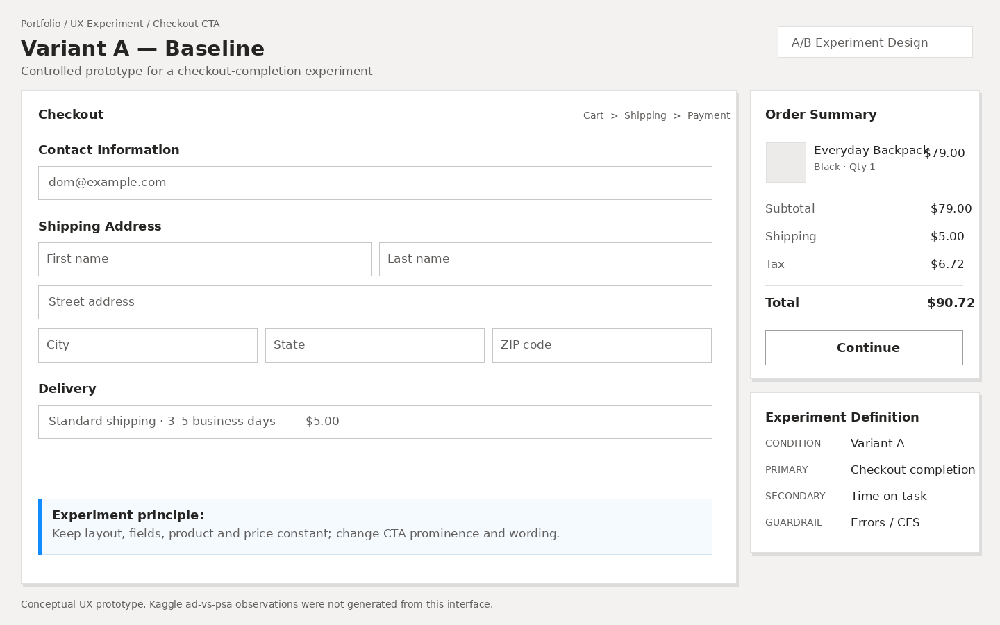
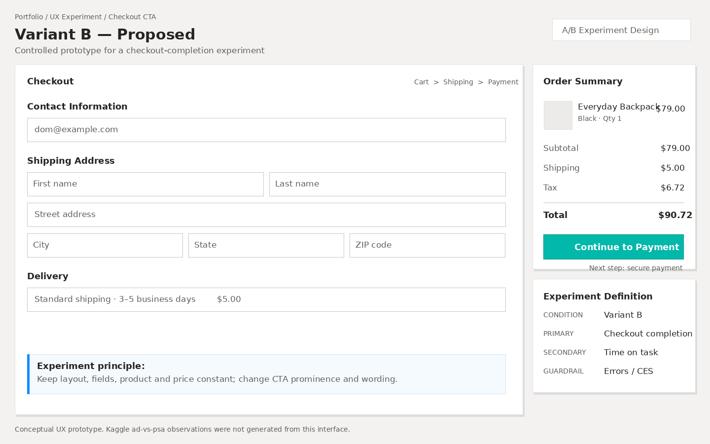

Statistical experimentation framework for evidence-based product and UX decisions
Automated validation passed
Public treatment/control case study · UX transfer framework
Research integrity:
the public dataset compares ad treatment vs psa control.
The UX Variant A/B screens are a conceptual transfer of the framework and are not the source of these observations.
PAGE 1
Experiment Overview
Primary outcome: user conversion
Total Participants⋯
—
Users in experiment
Treatment CR⋯
—
ad group
Control CR⋯
—
psa group
Absolute Uplift⋯
—
Percentage points
Relative Uplift⋯
—
vs control baseline
Statistical Decision⋯
—
α = 0.05
Conversion Rate by Experiment Group
Observed probability of conversion
⋯
95% Confidence Interval — Absolute Difference
Treatment minus control · percentage points
⋯
—
Observed absolute difference
0.00.250.500.751.00 pp
95% CI—
Sample Allocation
Observed group distribution
⋯
Treatment —
Control —
The intended randomization ratio is not documented in the CSV, so the observed imbalance is documented rather than labeled as SRM failure.
Evidence Summary
Primary and supporting inferential results
⋯
Evidence
Estimate
Interpretation
Experiment Decision Logic
Statistical evidence is necessary, not sufficient
⋯
1
Data qualityOne row per user · no missing values
2
Statistical evidencep-value below α
3
Effect magnitudeEvaluate absolute and standardized effect
4
Validity & guardrailsRequired before UX rollout
Risk Ratio & Odds Ratio
Complementary multiplicative effect measures
⋯
Risk Ratio—
—
Logistic Odds Ratio—
—
Statistical ≠ Practical Significance
With a very large sample, a small standardized effect can still produce an extremely small p-value.
The rollout decision should therefore combine absolute uplift, confidence intervals, guardrails, and product value.
These views are descriptive. Exposure, day, and hour are not treated as randomized causal effects.
Exposure Band
Observed conversion rate
⋯
Day of Highest Exposure
Observed conversion rate
⋯
Hour of Highest Exposure
Observed conversion rate
⋯
Observed Pattern Summary
Use for hypothesis generation, not causal claims
⋯
PAGE 4
UX Experiment Framework
Conceptual transfer from statistical case study to interface experimentation
UX HYPOTHESIS
Increasing the visual prominence and action clarity of the primary checkout CTA will improve checkout completion without increasing user effort or errors.
Variant A — Baseline
Control experience
CONTROL

Variant B — Proposed
UX treatment
TREATMENT

Metric Framework
Primary, secondary, and guardrail metrics
⋯
PRIMARYCheckout Completion Rate
Target behavior
SECONDARYTask Completion · Time on Task
Interaction efficiency